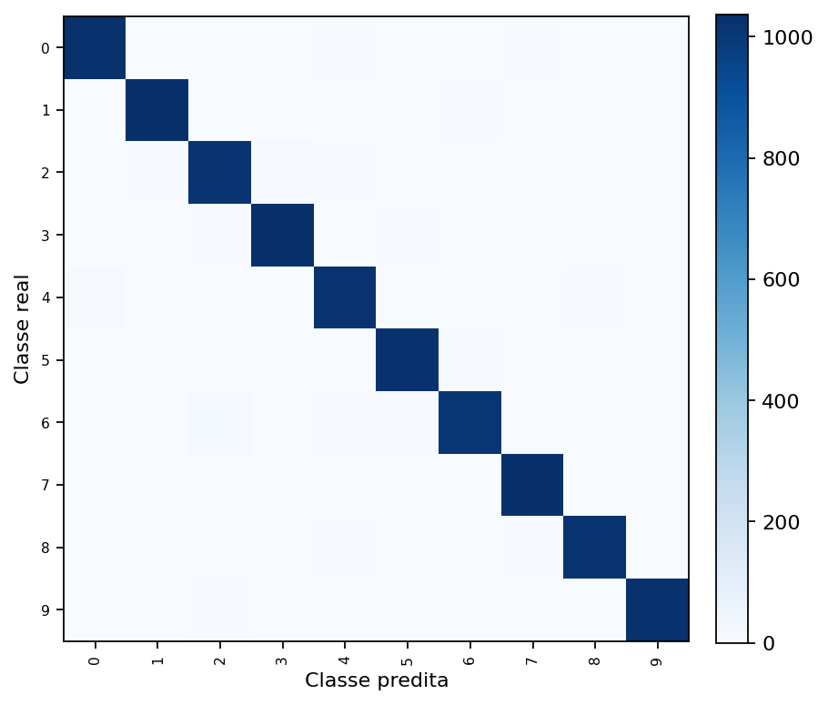
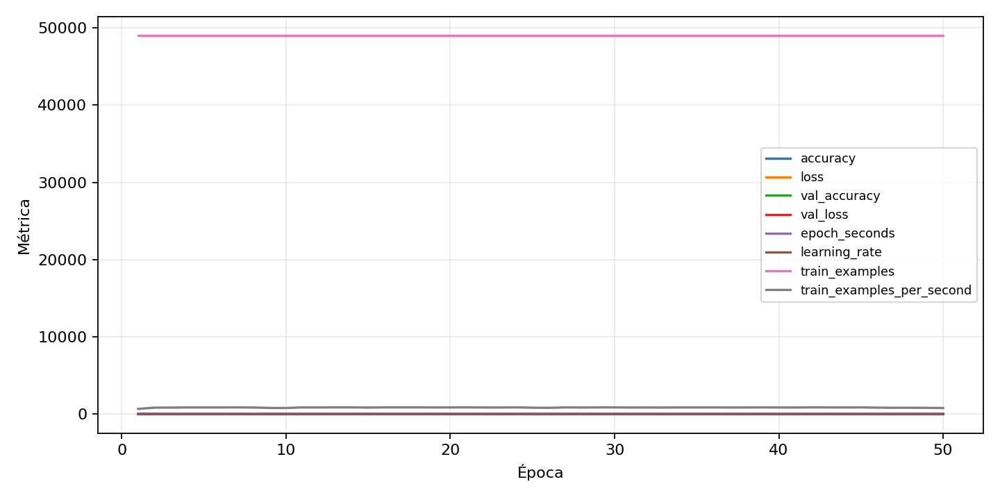

| n_samples | 10500 |
|---|---|
| loss | 0.11482665687799454 |
| accuracy | 0.9768571428571429 |
| balanced_accuracy | 0.9768571428571431 |
| macro_f1 | 0.9768541297166685 |


| Índice | Classe | Suporte | Precisão | Recall | F1 |
|---|---|---|---|---|---|
| 0 | 0 | 1050 | 0.9837164750957854 | 0.9780952380952381 | 0.9808978032473734 |
| 1 | 1 | 1050 | 0.9781990521327014 | 0.9828571428571429 | 0.9805225653206651 |
| 2 | 2 | 1050 | 0.9657794676806084 | 0.9676190476190476 | 0.966698382492864 |
| 3 | 3 | 1050 | 0.9736346516007532 | 0.9847619047619047 | 0.9791666666666666 |
| 4 | 4 | 1050 | 0.9696106362773029 | 0.9723809523809523 | 0.9709938183547313 |
| 5 | 5 | 1050 | 0.9771646051379639 | 0.9780952380952381 | 0.9776297001427892 |
| 6 | 6 | 1050 | 0.9806201550387597 | 0.9638095238095238 | 0.9721421709894332 |
| 7 | 7 | 1050 | 0.9727954971857411 | 0.9876190476190476 | 0.9801512287334594 |
| 8 | 8 | 1050 | 0.9798850574712644 | 0.9742857142857143 | 0.9770773638968482 |
| 9 | 9 | 1050 | 0.9875120076849183 | 0.979047619047619 | 0.9832615973218555 |
{"adapter":"kmnist","balance_mode":"all_raw","class_names":["0","1","2","3","4","5","6","7","8","9"],"dataset":"kmnist","dataset_options":{},"dataset_root":"/home/msduda/datasets-tcc/kmnist","native_channels":1,"normalization":"unit_interval","num_classes":10,"protocol":{"checkpoint_monitor":"val_macro_f1","dtype_policy":"mixed_float16","early_stopping":{"patience":50,"restore_best_weights":true},"evaluation_augmentation":false,"input_channels":"native","optimizer":"Adam","pretrained_weights":false,"reduce_lr_on_plateau":{"factor":0.3,"min_lr":1e-07,"patience":50},"resize":"proportional_padding","test_time_augmentation":false,"training_from_scratch":true},"seed":42,"source_fingerprint":"8928d478d8d23938a73b4f4a92c407bf3d74beff1e0e67e3644d6ecdc30cf828","source_manifest":{"class_names":["0","1","2","3","4","5","6","7","8","9"],"joined_samples":70000,"metadata":{"layout":"kmnist-component-npz"},"name":"kmnist","native_channels":1,"source_path":"/home/msduda/datasets-tcc/kmnist","splits":{"test":10000,"train":60000},"target_size":64},"target_size":64,"test_fraction":0.15,"train_fraction":0.7,"training":{"augmentation":{"brightness_delta":0.0,"contrast_lower":1.0,"contrast_upper":1.0,"cutout_max_frac":0.0,"cutout_prob":0.0,"flip_lr":false,"noise_std":0.0,"translate_frac":0.0,"zoom_max":1.0,"zoom_min":1.0},"batch_size":304,"default_image_size":64,"dtype_policy":"mixed_float16","early_stopping_patience":50,"extra_fraction":0.0,"image_size_overrides":{"gtsrb":128},"keras_verbose":1,"learning_rate":0.0003,"max_epochs":50,"preprocess_cache_max_mib":0,"reduce_lr_factor":0.3,"reduce_lr_min_lr":1e-07,"reduce_lr_patience":50,"shuffle_buffer_max_mib":0},"validation_fraction":0.15}
{"epochs_completed":50,"epochs_recorded":50,"evaluation_seconds":24.506071690997487,"fit_seconds_current_attempt":3481.8811050600016,"max_epoch_seconds":72.56880095900124,"max_epochs":50,"mean_epoch_seconds":57.91118004779986,"mean_train_examples_per_second":847.5561043933554,"median_train_examples_per_second":859.0036714672954,"min_epoch_seconds":56.28466624999783,"selected_checkpoint":"/mnt/e/tcc-benchmark/outputs/kmnist-alldata-noaug-batch-sweep-2026-08-06/batch-304/kmnist/runs/kmnist__unit_interval__all_raw__seed-42/checkpoints/best.keras","total_seconds":2895.559002389993,"training_seconds":2895.559002389993,"wall_seconds_current_attempt":3510.679728575}
{"elapsed_seconds":3510.7448697990003,"event_counts":{"data_preparation_end":1,"data_preparation_start":1,"epoch_end":50,"evaluation_end":1,"evaluation_start":1,"fit_end":1,"fit_start":1,"periodic":691,"run_completed":1,"train_start":1},"generated_at":"2026-08-07T22:54:21.506+00:00","gpu_backend":"pynvml","interval_seconds":5.0,"metrics":{"cpu_percent":{"count":749,"max":100.0,"mean":13.01214953271028,"min":3.5,"p50":13.0,"p95":15.8},"disk_data_free_bytes":{"count":749,"max":998271209472.0,"mean":998271145166.4406,"min":998271135744.0,"p50":998271143936.0,"p95":998271148032.0},"disk_data_percent":{"count":749,"max":2.7,"mean":2.7,"min":2.7,"p50":2.7,"p95":2.7},"disk_data_total_bytes":{"count":749,"max":1081101176832.0,"mean":1081101176832.0,"min":1081101176832.0,"p50":1081101176832.0,"p95":1081101176832.0},"disk_data_used_bytes":{"count":749,"max":27837685760.0,"mean":27837676337.559414,"min":27837612032.0,"p50":27837677568.0,"p95":27837677568.0},"disk_output_free_bytes":{"count":749,"max":207196323840.0,"mean":207187839569.3458,"min":207183298560.0,"p50":207190880256.0,"p95":207191670784.0},"disk_output_percent":{"count":749,"max":79.3,"mean":79.3,"min":79.3,"p50":79.3,"p95":79.3},"disk_output_total_bytes":{"count":749,"max":1000186310656.0,"mean":1000186310656.0,"min":1000186310656.0,"p50":1000186310656.0,"p95":1000186310656.0},"disk_output_used_bytes":{"count":749,"max":793003012096.0,"mean":792998471086.6542,"min":792989986816.0,"p50":792995430400.0,"p95":793002983424.0},"elapsed_seconds":{"count":749,"max":3510.673392,"mean":1756.9634541508676,"min":0.030089,"p50":1755.059646,"p95":3346.8244268},"gpu_count":{"count":749,"max":1.0,"mean":1.0,"min":1.0,"p50":1.0,"p95":1.0},"gpu_memory_percent":{"count":749,"max":52.64592170715332,"mean":52.142548847580464,"min":44.6528434753418,"p50":52.24614143371582,"p95":52.46411323547363},"gpu_memory_total_bytes":{"count":749,"max":8589934592.0,"mean":8589934592.0,"min":8589934592.0,"p50":8589934592.0,"p95":8589934592.0},"gpu_memory_used_bytes":{"count":749,"max":4522250240.0,"mean":4479010840.608811,"min":3835650048.0,"p50":4487909376.0,"p95":4506633011.2},"gpu_temperature_c":{"count":749,"max":51.0,"mean":42.32042723631508,"min":38.0,"p50":42.0,"p95":49.0},"gpu_utilization_percent":{"count":749,"max":81.0,"mean":20.102803738317757,"min":1.0,"p50":7.0,"p95":55.0},"process_cpu_percent":{"count":749,"max":211.5,"mean":168.6493991989319,"min":0.0,"p50":172.7,"p95":206.66},"process_read_bytes":{"count":749,"max":12234752.0,"mean":12190056.929238986,"min":7933952.0,"p50":12234752.0,"p95":12234752.0},"process_rss_bytes":{"count":749,"max":4097814528.0,"mean":3788783665.2176237,"min":1029971968.0,"p50":3912900608.0,"p95":4047302656.0},"process_vms_bytes":{"count":749,"max":48954449920.0,"mean":48456132299.0227,"min":39581405184.0,"p50":48602812416.0,"p95":48820232192.0},"process_write_bytes":{"count":749,"max":1146880.0,"mean":1133574.8357810413,"min":4096.0,"p50":1146880.0,"p95":1146880.0},"ram_available_bytes":{"count":749,"max":15538544640.0,"mean":12947717783.07076,"min":12641103872.0,"p50":12826886144.0,"p95":13527695360.0},"ram_percent":{"count":749,"max":23.9,"mean":22.090921228304403,"min":6.5,"p50":22.8,"p95":23.6},"ram_total_bytes":{"count":749,"max":16619085824.0,"mean":16619085824.0,"min":16619085824.0,"p50":16619085824.0,"p95":16619085824.0},"ram_used_bytes":{"count":749,"max":3977981952.0,"mean":3671368040.929239,"min":1080541184.0,"p50":3792199680.0,"p95":3930258636.8}},"sample_count":749,"schema_version":1}